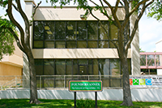

<a [routerLink]="['/building']" class="btn btn-warning"  routerLinkActive="active">Go Back</a>

<br/>
<br/>

<h1 style="font-size:large;">Founders West Annex</h1>

<div style="width:300px;"></div>
<br/>
<br/>

<a href="http://www.utdallas.edu/locator/FA_2"><button type="button" class="btn btn-outline-primary">Room Locator</button></a>


<div  class="include-piece">&nbsp;</div>
<div id="page-content">
    <div>Skybridge (Third Floor)</div>
    <div>Classrooms</div>
    <div>Geo Sciences</div>
    <div>Graduate Dean</div>
</div>